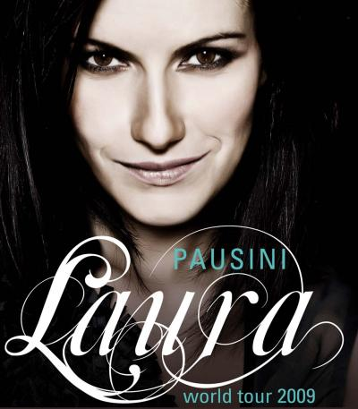
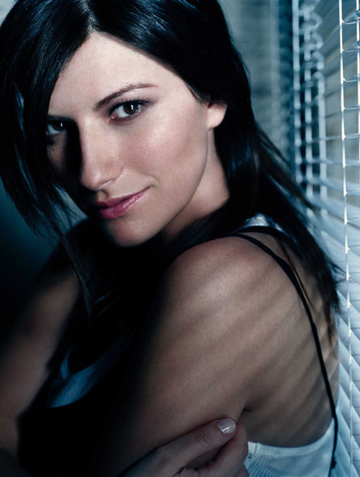
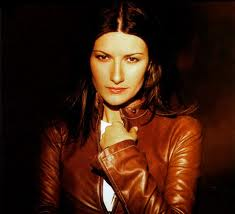

Sanremo, The Voice e il nuovo disco. Un anno intenso per la rossa Noemi, che in attesa di salire sul palco dell'Ariston ci parla di sé e dei suoi mille impegni. Made in London, che uscirà il prossimo 20 febbraio, è il nuovo album di Noemi.Sanremo, The Voice e il nuovo disco. Un anno intenso per la rossa Noemi, che in attesa di salire sul palco dell'Ariston ci parla di sé e dei suoi mille impegni. Made in London, che uscirà il prossimo 20 febbraio, è il nuovo album di Noemi.Sanremo, The Voice e il nuovo disco. Un anno intenso per la rossa Noemi, che in attesa di salire sul palco dell'Ariston ci parla di sé e dei suoi mille impegni. Made in London, che uscirà il prossimo 20 febbraio, è il nuovo album di Noemi.
Pop Dance